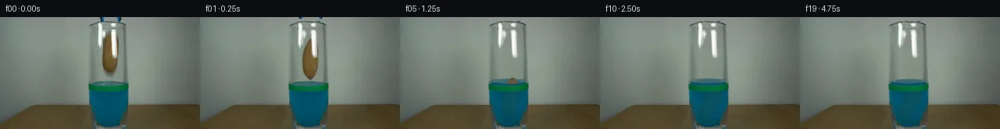

![首帧]()

Round 00
2026-11-05T16:03:38.068176+00:00像素候选变化代码 +235/−0inspection 更新
pixels 5e700fa3ce2503f5 · code 386a8c2a25314f11
查看本轮 generate.py 真实 diff
--- previous/generate.py
+++ current/generate.py
@@ -0,0 +1,235 @@
+"""Photograph-based local pixel animation, with deterministic analytic motion."""
+from pathlib import Path
+import math
+import numpy as np
+from PIL import Image, ImageDraw, ImageFilter
+from scipy.ndimage import gaussian_filter, map_coordinates
+from scipy.interpolate import PchipInterpolator
+import cv2
+from artifact_io import save
+
+ROOT = Path(__file__).resolve().parent
+W, H, S = 256, 144, 4
+src = np.array(Image.open(ROOT/'first_frame.png').convert('RGB'), dtype=np.float32)
+yy, xx = np.mgrid[:H, :W].astype(np.float32)
+
+def soft_polygon(points, blur=.45):
+ im = Image.new('L', (W*S,H*S))
+ ImageDraw.Draw(im).polygon([(round(x*S),round(y*S)) for x,y in points], fill=255)
+ im=im.resize((W,H), Image.Resampling.LANCZOS)
+ a=np.array(im,dtype=np.float32)/255
+ return gaussian_filter(a,blur) if blur else a
+
+def composite(bg, fg, a):
+ return bg*(1-a[...,None])+fg*a[...,None]
+
+# Source silhouette measured by hand, including the taper at the lower end.
+ys=np.array([17.5,21,27,35,45,55,61,65,69,71],float)
+left=np.array([141,138,135,132.2,131.1,131.6,133,135.2,138.8,141.5])
+right=np.array([143,147,150,151.3,151.2,150.4,148.7,147,144,141.5])
+py=np.linspace(ys[0],ys[-1],220)
+pl=PchipInterpolator(ys,left)(py);pr=PchipInterpolator(ys,right)(py)
+potato_mask=soft_polygon(list(zip(pl,py))+list(zip(pr[::-1],py[::-1])),.38)
+
+# Reconstruct the diffuse interior from neighboring clear glass rows.
+# This removes the potato and its original optical blur/shadow.
+clear=src.copy()
+for y in range(H):
+ donor=src[y,153:156].mean(axis=0)
+ for x in range(129,155):
+ clear[y,x]=donor+np.array([3.0,2.0,1.5])+(143-x)*np.array([.10,.10,.07])
+remove=soft_polygon([(135,15),(148,16),(155,28),(154,58),(150,73),
+ (143,79),(133,76),(129,63),(129,33)],.9)
+clean=composite(src,clear,remove)
+
+# Separate stationary glass glare from brown material. The observed blue
+# channel is useful because potato blue reflectance is low and white glare is high.
+base_tex=np.zeros_like(src)
+for y in range(H):
+ v=(y-44)/27
+ candidates=src[y,133:144]
+ valid=(candidates[:,0]>candidates[:,1]*1.055)&(candidates[:,2]<candidates[:,1]*.75)
+ if 21<=y<=70 and valid.any():
+ row=np.median(candidates[valid],axis=0)
+ else:
+ row=np.array([103,82,45],float)
+ for x in range(W):
+ u=(x-141)/10
+ shading=np.clip(1-.12*u*u+.055*u,.68,1.025)
+ base_tex[y,x]=row*shading
+
+reflection_zone=soft_polygon([(130,18),(134,17),(137,22),(134,32),(130,37)],.7)
+reflection_zone=np.maximum(reflection_zone,
+ soft_polygon([(141,16),(148,17),(151,28),(151,51),(145,53),(142,47)],.7))
+glare=np.clip((src[:,:,2]-base_tex[:,:,2])/(254-base_tex[:,:,2]),0,1)
+glare*=reflection_zone
+# Recover material where the source has unoccluded brown texture; fill white
+# glare with row-derived brown texture and mild original high-frequency detail.
+is_brown=(src[:,:,0]>src[:,:,1]*1.045)&(src[:,:,2]<src[:,:,1]*.80)
+tex=base_tex.copy()
+tex[is_brown]=src[is_brown]
+repair=np.clip(glare*1.8,0,1)
+tex=composite(tex,base_tex,repair)
+tex=gaussian_filter(tex,(.32,.32,0))
+# Reconstruct the source highlights on empty glass. This remains stationary.
+clean=composite(clean,np.full_like(src,254),glare*remove)
+
+# Small tool tips are removed without changing the glass mouth.
+tool_mask=soft_polygon([(125,-2),(135,-2),(135,4.8),(128,5.0)],.25)
+tool_mask=np.maximum(tool_mask,soft_polygon([(147,-2),(156,-2),(154,4.5),(149,5.3)],.25))
+mask8=(tool_mask>.05).astype(np.uint8)*255
+clean=cv2.inpaint(np.uint8(np.clip(clean,0,255)),mask8,3,cv2.INPAINT_TELEA).astype(np.float32)
+# Stabilize top background at the tool removals using local horizontal interpolation.
+for y in range(0,5):
+ for l,r in [(125,135),(148,155)]:
+ for x in range(l,r+1):
+ a=(x-l)/(r-l)
+ rgb=src[y,l-2]*(1-a)+src[y,r+2]*a
… diff truncated; 148 more lines …